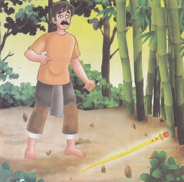
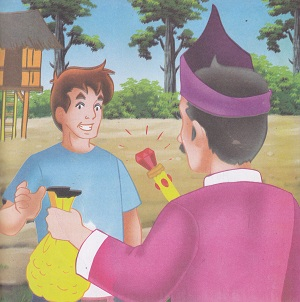
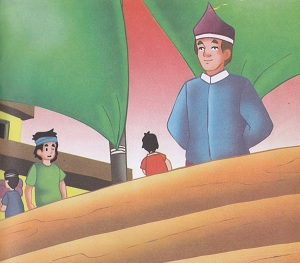
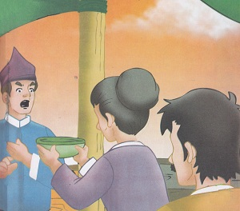
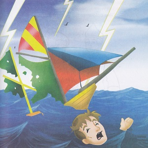

Legenda Pulau Kapal
( Cerita Rakyat Bangka Belitung )
Dahulu kala, di dekat sungai Cecuruk,hiduplah sebuah keluarga yang sangat miskin.Mereka terdiri dari Ayah,Ibu,dan seorang anak laki-laki yang bernama Kulup. Suatu hari, ayah kulup pergi untuk mencari rebung di hutan untuk diolah menjadi sayur dan mereka bertiga makan. Sesampai di hutan, ayah Kulup menemukan sebuah tongkat diantara rumpunan bambu yang berhiaskan intan permata dan batu merah delima. 
Setelah berunding dengan keluarga, akhirnya mereka sepakat untuk menjual tongkat tersebut ke negeri seberang si Kulup lah yang diutus. Tongkat tersebut dijual dengan harga sangat tinggi oleh si Kulup, namu ia tidak kembali ke desa melainkan menetap di negeri itu dan si Kulup pun menjadi seorang yang kaya raya. Ia pun menikah dengan putri salah satu saudagar terkaya di negeri tersebut.
Kulup lalu membeli sebuah kapal besar yang mewah dan mempersiapkan para awak kapal untuk dibawanya pergi berlayar. Mertuanya pun merestuinya.Setelah itu,berangkatlah Kulup bersama istrinya dan para awak kapalnya. Ketika tiba di muara Sungai Cecuruk,Kulup teringat akan kampung halamannya. Kapalnya kemudian berlabuh di Sungai Cecuruk.
Berita tentang kedatangan Si Kulup sampai ke kedua orang tuanya. Orang tuanya pun pergi ke Sungai dengan membawa makanan kesukaan Si Kulup. Kedua Orang tuanya lalu pergi menemui Si Kulup. Namun,Si Kulup tidak mau mengakui orang tuanya. Ia malu kalau istrinya tahu bahwa orang tuanya adalah orang yang miskin. Orang tuanya lalu memberikan Si Kulup makanan kesukaannya.Tetapi, Kulup membuang makanan itu dan mengusir kedua orang tuanya.
Orang tuanya pun pulang dengan hati remuk redam. Dengan berlinang air mata sang ibu berdoa”Ya Tuhan, bila benar saudagar kaya itu adalah anakku, karamkanlah kapal milik saudagar itu”. Tiba-tiba muncullha badai besar yang meneggelamkan kapal, seluruh awak kapal tewas termasuk si Kulup. Sejak saat itu muncullah pulau yang menyerupai kapal dan diberi nama Pulau Kapal.